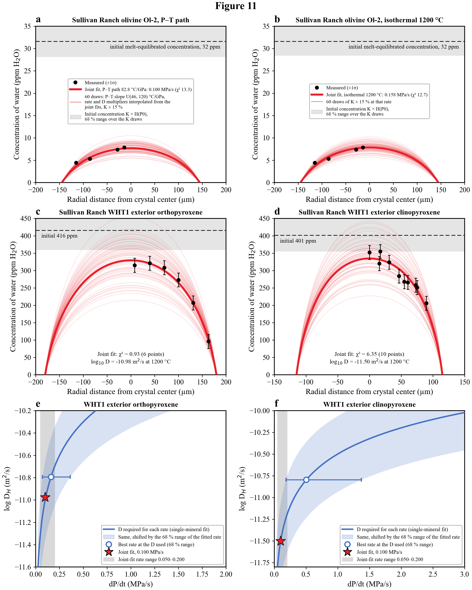
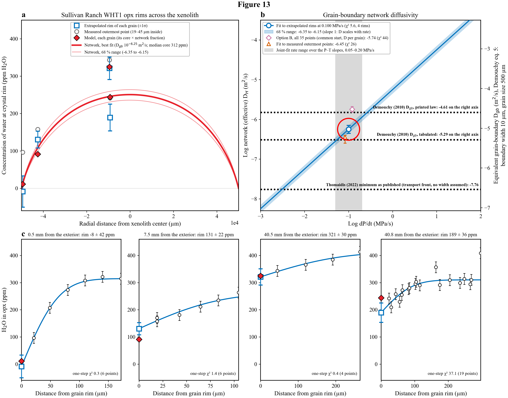

Sullivan Ranch: xenolith H2O, magma ascent and degassing
Update for co-authors since the 2023 thesis chapter
1 Summary for co-authors
What has changed in the Sullivan Ranch (SR) work since the 2023 thesis chapter, and what do the new analyses conclude? This document follows the format of the deposited chapter, “Testing the Fidelity of Peridotite Xenoliths as Records of Water in the Lithospheric Mantle”, and leads with what is different. The question is unchanged: do hydrogen (H2O) concentrations in the nominally anhydrous minerals (NAMs) of mantle xenoliths record the mantle, or the magma that carried them up? The data are SIMS and NanoSIMS H2O in olivine, orthopyroxene (opx) and clinopyroxene (cpx) from SR xenoliths and scoria, with melt-inclusion volatiles and the magma’s pressure-temperature (P–T) path. The sections below give the five biggest changes, then an extended abstract that lists every conclusion and major result by stage, then a guide to the chapters. Appendix Appendix E maps all 41 points of the deposited chapter to their present status.
1.1 The five biggest changes since the thesis
The changes are ranked by how much they alter the findings. Chapter 2 gives the full ranked table.
- The ascent rate is lower and now rests on one history for three minerals (Figure 1.1). The thesis gave 0.2 ± 0.05 MPa/s (isothermal, about 1200 °C) from olivine alone. With temperature falling along the magma’s P–T path, one continuous ascent fits olivine Ol-2, exterior opx and exterior cpx together at 0.100 MPa/s (0.050–0.200 over the temperature-slope envelope), 0.63× the isothermal joint fit of 0.158. That is about 3.6 m/s. The starting melt is the published MiMiC melt; the CO2/Nb start (second scenario) raises every rate by about 10 % (joint 0.112).
- The melt degasses water much later than the thesis said. The thesis put the onset of degassing at 150 MPa. The MiMiC starting melt saturates at 682 MPa, but CO2 dominates the early vapor and the melt loses half of its H2O only below about 55 MPa, where the magma is at about 1110–1180 °C. The H2O loss that sets the rate therefore happens at lower temperature than the thesis assumed.
- The starting melt is the published MiMiC melt, wetter than the thesis start. The thesis path began from a lava with 3.36 wt% H2O and 8,476 ppm CO2. The new primary start is the published MiMiC melt (Rasmussen et al. 2020) with 3.549 wt% H2O and 8,529 ppm CO2. A second scenario, the CO2/Nb start, has 3.59 wt% H2O and 14,100 ppm CO2 (CO2/Nb 239 × Nb 59) and moves the rate by about 10 %. Intact interior opx cores independently imply 3.48–3.49 wt%, close to both starts.
- The fits favor slower pyroxene diffusivities than the 2023 brackets. The 2023 cpx upper bound was extrapolated from Ferriss et al. (2016) to the tetrahedral Al of the WHT1 cpx (they publish laws for Kunlun diopside but no equation for the Al dependence), and the cpx interior profiles used the opx bracket. With the pyroxene diffusivity left free, the fits need slow natural-pyroxene values (log10 D at 1200 °C of −11.0 for opx and −11.5 for cpx), and the pyroxene rates fall from about 0.69 and 0.68 MPa/s (2023) to 0.161 and 0.504 on the path.
- The signal reached the xenolith interior through a fast pathway (Figure 1.3). The 2023-style test, in which grain rims sit at the boundary value, fails (χ² 42 for 5 rims). Two standard fits put the network that carries the falling water activity inward at log10 D −6.25 (each grain’s extrapolated rim) to −5.75 (all opx points, one common start, a diffusivity per grain) m²/s at 0.100 MPa/s, 3–9× below the olivine grain-boundary value of Demouchy (2010). This grain-boundary modeling is still in progress (grain sizes and traverse geometry, a path-length factor, the two interior grains at 40.5 and 40.8 mm, and the cpx coupling); the numbers here are the current standard fits.
A sixth change affects the Stage 0 argument: cpx cores hold 1.2–2.6× the H2O that recalibrated experiments predict, so the cpx partitioning check in the thesis does not hold on a common calibration (Chapter 9).
1.2 Key figures
These three figures carry the main results. Each comes from a later chapter or appendix, where the methods are given.



1.3 Extended abstract
What are all the conclusions and major results? They are grouped by the stages of the thesis, from the last event (Stage III) back to the source (Stage 0).
1.3.1 Stage III: after eruption (Chapter 7)
Cooling of bomb-sized xenoliths after eruption does not change the NAM water.
- Core concentrations are flat across intact xenoliths of different sizes, and the host’s olivine phenocryst profile survives, which limits any post-eruptive hold at high temperature to well under about 3.6 minutes.
- Olivine cores in the xenolith (SIMS dataset, Supplement Table S2: interior 6.89, exterior 5.95 ppm) match phenocryst cores (6.77 ppm), the thesis evidence that the host reset them. The thesis text read about 1.3× higher than the data; the data are unchanged.
1.3.2 Stage II: final ascent in degassing magma (Chapter 8)
- Rate. The SR magma decompressed at 0.100 MPa/s on the P–T path (0.050–0.200 over 46–120 °C/GPa), χ² 20.6 for 20 points, against 0.158 for the isothermal joint fit. Olivine Ol-2 alone gives 0.093 (68 %: 0.055–0.154), against 0.143 isothermal and 0.151 for the 2023 fit. The CO2/Nb start gives 0.112 (0.056–0.200).
- One history, three minerals. Opx and cpx agree with olivine if their diffusivities are slow (opx −10.98, cpx −11.50). Continuous ascent is best at 82.8 and 120 °C/GPa; at the shallowest slope (46 °C/GPa) a 5-minute stall fits slightly better (χ² 20.3 against 22.0). With the 2023 diffusivities a short stall halved the misfit, but the free-D fit does not need one.
- Where the water goes. Saturation is at 682 MPa (922 MPa for the CO2/Nb start); half of the H2O is lost below about 55 MPa (63 MPa). The melt still holds 90 % of its H2O at 248 MPa (340 MPa for the CO2/Nb start).
- What moves the rate. The largest choices are the olivine/melt partition coefficient, the diffusivity law (0.13–0.64 MPa/s across laws) and the temperature of loss. The melt-inclusion MiMiC version moves the rates by 2 % or less, and the choice between the MiMiC and CO2/Nb starts by about 10 %.
- Among published eruptions (Figure 1.2). SR is 1.0× Seguam 1977, about 0.2–0.3× the subplinian Fuego 1974 and Etna 3930 BP eruptions, and 3.4–11× Cerro Negro, on each study’s own model temperature.
- Into the xenolith (work in progress). The exterior opx grain is effectively unbuffered and its rim extrapolates to about zero (−8 ± 42 ppm); the interior grains saw about a fifth to half of the melt’s drop. The two standard fits put the network D at 10^−6.25 (each grain’s extrapolated rim) and 10^−5.75 m²/s (one common start, an opx diffusivity per grain) at 0.100 MPa/s. With the cpx boundary seeing half the network’s drop, opx and cpx fit together, and their fitted common starts (412 and 388 ppm) match the intact interior cores.
1.3.3 Stage I: ascent in water-undersaturated magma (Chapter 9)
- Intact interior opx cores (about 411 ppm) are in equilibrium with 3.48–3.49 wt% melt H2O, close to the MiMiC start (3.549 wt%) and the CO2/Nb start (3.59 wt%). The opx traverses sit at two levels: two grains plateau near 300–320 ppm and only the deepest points reach 409–413 ppm. The rate model fits with the MiMiC start (joint χ² 20.6 on the path; it was 41 for the 2.72 wt% mixture start with the CO2/Nb-start fit (the mixture start shares the CO2 of the CO2/Nb start)); the offset is stated as uncertainty in the opx partition coefficient or in the starting H2O.
- Fe–Mg diffusion gives Ol-2 a residence time of 18.4 days (15.7–21.3) at 1250 °C in the final melt, and xenocrysts 0.15–3.0 days. The two localities (pit and roadside) were probably two magma pulses.
- Cpx cores hold 1.2–2.6× the H2O that recalibrated experiments predict. Wetter magmas carry wetter xenolith NAMs (SR, Vulcan’s Throne), drier magmas drier ones (Cima).
1.3.4 Stage 0 and implications (Chapter 10)
- No vestige of mantle water is demonstrated in these xenoliths: the interior cores record the host melt, as the thesis concluded. The cpx partitioning misfit is an open caveat.
- Published xenolith-NAM ascent rates assume a fixed zero boundary from entrainment, so they are upper bounds and not like-for-like with melt-based rates.
- The thesis’s accelerating-ascent picture (0.002 MPa/s deep, 0.2 MPa/s shallow) now reads 0.1 MPa/s in the upper crust; the deep rate is not recomputed.
1.3.5 Inputs and data quality (Chapter 4, Chapter 5, Chapter 6)
- The SR melt inclusions record primary melt batches (H2O follows Cl); their CO2 was largely lost before trapping (retained 9–54 % at CO2/Nb 239). Inclusion saturation pressures are 129–574 MPa, shallower than pickup at about 1.15 GPa.
- A total 1σ replaces the deposited combined uncertainty, which was about 0.58× the 1σ; six analyses fall below the detection limit.
- Two thesis table errors are corrected: GC2_ol4 carried GC2_ol3’s volatiles, and the Fig. 11 caption printed 0.009 ± 0.003 for the olivine partition coefficient 0.0009 ± 0.0003.
1.4 Chapter guide
- Chapter 2: the ranked list of changes, the problems with the 2023 methods and their fixes.
- Chapter 3: the fidelity question, the four stages on the P–T path, why SR.
- Chapter 4: localities, samples, SIMS and models in paper form.
- Chapter 5: results for water in olivine, cpx and opx.
- Chapter 6: melt-inclusion results and the starting melt.
- Chapter 7: Stage III, after eruption.
- Chapter 8: Stage II, the rate and how the signal entered the xenolith.
- Chapter 9: Stage I, reset of the NAMs, residence times, cpx partitioning.
- Chapter 10: Stage 0 and implications.
- Chapter 11: open questions for co-authors.
- Appendices: Appendix A (diffusion fits), Appendix B (melt-inclusion methods), Appendix C (degassing models), Appendix D (data quality), Appendix E (decisions, crosswalk, reproducibility).
Sources: docs/ASCENT_RATE_SUMMARY_2026-10-22.md, docs/supplement/SUMMARY_WRITEUP_NOTES.md, data/supplement/summary_csv/, report/appendices/c-ch3-crosswalk.md.